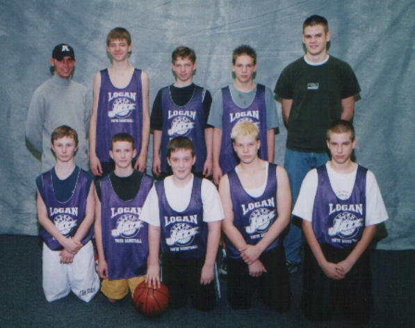

Mat
Mat is our oldest son who is currently in his junior year at Utah State University studying Computer Science. He is a member of the US Army reserve while he is attending Utah State University and works for Cache County School District doing network installation and maintenance.
He loves basketball and is largely responsible for teaching our second son Zac to play and love the game. He is 6' 6" tall and has always been tall for his age. So, of course, he always played center. 
He served an LDS 2 year mission in the Washington Tacoma mission. He even served in Falls where the Twilight novels were
set. He said it lived up to its reputation for the town with the fewest clear days in the lower 48.